Abstract
编译器中大部分机器无关的全局优化是基于
Data-flow Analysis实现的。数据流分析技术从代码中收集程序语义相关的信息，是程序分析的基础。In each data-flow analysis application, we associate with every program point a data-flow value that represents an abstraction of the set of all possible program states that can be observed for that point.
在工业界的主流编译器中，
C系的LLVM，Java系的HotSpot都是基于SSA做数据流分析而不是传统的lattice。南大这节课中是基于Lattice来讲解过程内Intra-procedural，无别名no aliases的经典数据流分析框架。
Applications
Overview
CFG
分析框架都是建立在
control-flow-graph上的，这是一种IR——由basic-blocks通过control-flows连接而成，可以分别看成是CFG的nodes和edges。 如何通过源码（单个函数）生成CFG见课件。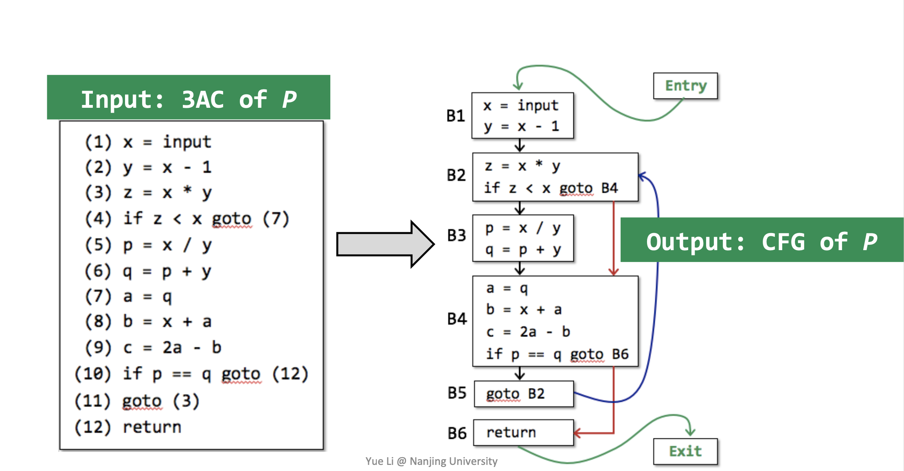
Abstract
数据流分析用来描述所谓数据如何在CFG中流动。这里的
data指的是程序语义信息的一种abstraction，CFG中的nodes和edges分别映射transfer-function和control-flow handling。所以整个分析是建立在一套成熟的理论框架之上的。
data(application-specific): 不同的数据流分析应用会有不同的抽象值value，比如分析变量数值时：+;-;0;UND;UNKNOW;
domain: 抽象数据流的值域即所有value定义的集合transfer-functions:不同的程序会有不同的CFG表示，进一步需要深刻CFG中statements，basic-blocks在被映射成transfer-functions时的区别和联系control-flows:控制流基本上只有三个——顺序，汇聚以及分流safety analysis
大部分的分析框架要求分析结果是
Sound的即over-approximation。而实际上并非所有如此——这里正式将所有分析分成两类：may analysis和must analysis。
may analysis: 要求分析结果中必须全部包含所有正确答案，换个角度理解就是不放过任何一个动态运行时的可能出错的行为——一旦发现就要报错，即over的概念must analysis: 要求分析结果一定是正确的，即不能有误报，即under的概念而
over和under在不同的应用中都代表了各自最safe的结果，因此所有的静态程序分析可以总结成：abstraction和safe-approximation两个阶段，不同的数据流分析有不同的abstraction和safe-approximation strategies即不同的transfer-functions和control-flow handlings。
Preliminaries
Input and Output States
所有的操作对象都是在一个
CFG中。
statements是CFG中的执行的最小单位——每一条statements的执行都会改变程序的状态。每一个
statements前后都有自己的program point分别代表input/output state，记作IN[S_i]/OUT[S_i]。又因为一个basic-blocks中的所有statements可以结合在一起（因为BB内部只能顺序执行）故每个basic-blocks开始和结束也有自己的program point，记作IN[B_i]/OUT[B_i]。
control flow表示了各个basic-blocks的执行顺序关系。分为三种：顺序，汇聚和分流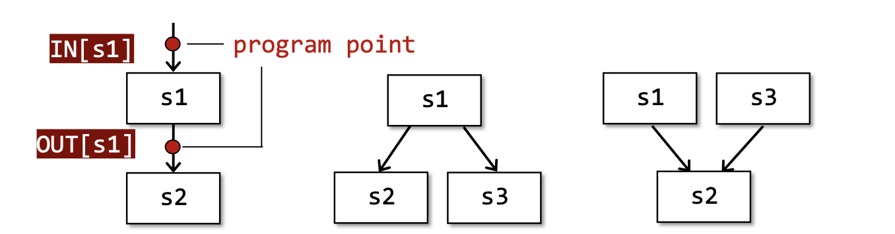
- 顺序：
IN[s2] = OUT[s1]- 汇聚:
IN[s2] = OUT[s1] ^ OUT[s3]
- 操作符
^指的是meet operator，不同的算法有不同操作比如并集，交集等- 分流:
IN[s2] = IN[s3] = OUT[s1]需要关注的是每个BB或者Statement的
program point，数据流分析会给每个program point一个data-flow value来抽象出当前位置程序的部分语义信息，再进一步利用各种safe-approximation-directed constraints以达到分析目的，这里的constraints具体指的是不同的transfer functions和control flow handlings。Notations for Transfer Functions’ Constraints
Forward Analysis： OUT[s] = F_s(IN[s]),其中F_s就是针对具体输入的
Transfer Function，前向分析是从输入推导输出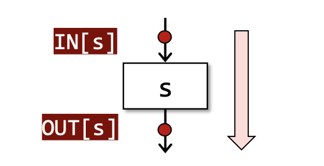
Backward Analysis：IN[s] = F_s(OUT[s]),后向分析是从输出推导输入
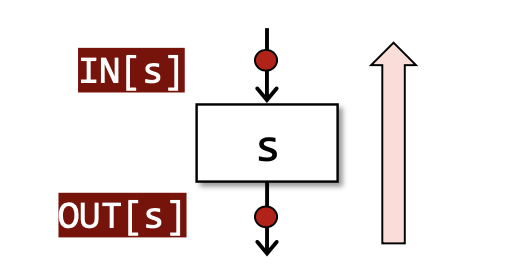
Notations for Control Flows’ Constraints
control flow within a BB
在一个BB内部，
IN[S_(i+1)] = OUT[S_(i)], for all i = 1, 2,...n-1——这个很好理解，一个BB中的statements只能顺序执行故只会有一个输入输出。control flow among BBs
对于一个
basic block来说：IN[B] = IN[S_1]; OUT[B] = OUT[S_n]。 而BB之间的执行不仅仅是顺序关系。还有汇聚和分流的执行顺序。首先是汇聚：
OUT[B] = F_b(IN[B])，其中F_b = F_sn * ...* F_s2 * F_s1也就是一个BB的的Transfer Function由内部statements各自的transfer function组成，IN[B] = ^ OUT[P]，表示所有汇聚的输出的并集都成为下一个的输入，这里的^就是表示并集的meet operator而P表示B的所有前驱basic blocks。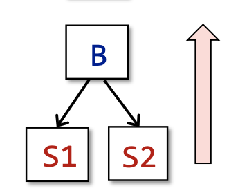
其次是分流：
IN[B] = F_b(OUT[B]);OUT[B] = ^IN[S]这里表示B的输出都成为所有S的输入，S是B的所有后继。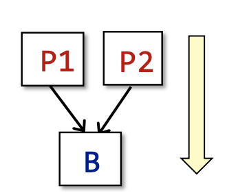
有了前面的基础，下面先介绍三种经典的数据流分析算法：
Reaching Definitions Analysis
定义
A definition d at program point p reaches a point q if there is a path from p to q such that d is not “killed” along that path.(A definition of a variable is a statement that assigns a value to v).
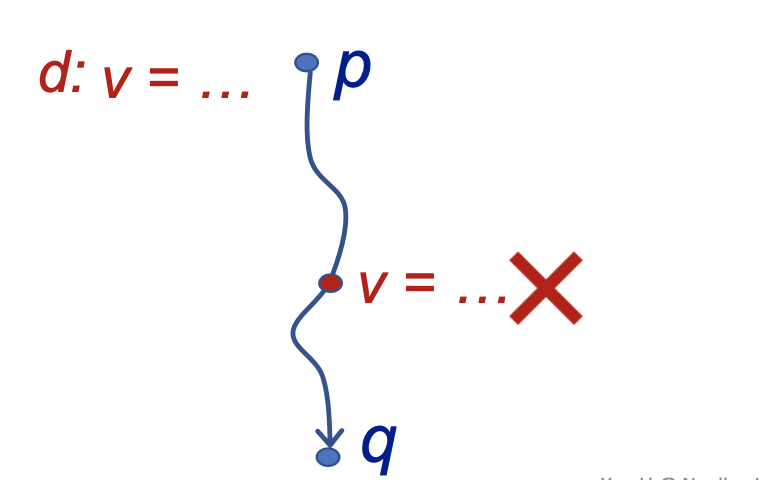
首先
definition-定义指的是对变量v进行赋值的语句。一般来讲定义都是从一个program point上完成的。在p点上的，一个对变量
v的definition能reach到某一个新的点q，取决于在控制流上是否存在一条从p到q的路径，同时在这条路径上该变量v不会被重新定义，就说是这个definition可以reach到q点。分析类型
从定义的
there is可以看出，这是一个may analysis——即控制流上从p到q的所有路径而言，只需要有一条路径没有被重新定义，那这两个program point之间就是Reached的。并且还知道这是一个forward analysis——因为是前面的program point上的definition可以reach到后面的program point。应用
该分析可以用来检查未定义的变量。对于所有需要检测的变量，在
CFG的entry入口处都赋值为dummy definition——实际上就是一个undefined的标签，如果变量v的可以到达某一个使用点，那这个变量就有可能是未定义前使用。细节
Data Flow Values/Fact
首先数据流分析需要对分析的对象进行抽象，这里使用
BitVector来表示一个CFG（即一段过程内程序中）上所有变量的definition。（注意关注对象definition不是变量本身，而是定义这个变量的所有program point。）Transfer Function
根据
IN求出每一个statemetns/basic blocks的OUT的。由该分析的目的可以得出：OUT[B] = gen_B ∪ (IN[B] - kill_B)，即对于每一个program point来说，其OUT就是在该点处新增加的对变量的definitions除掉别处这些变量的definitions。Control Flow
根据上一个
statements/basic blocks的OUT求出下一个的IN。因为作为may分析，其不放过任何一个运行时的行为，所以针对所有留到该IN的OUT都要接收。即IN[B] = ∪_p(p是B所有的前驱结点)OUT[P]。算法
2
3
4
5
6
7
8
9
10
11
12
13
14
> INPUT: CFG(kill_B and gen_B computed for each basic blocks B)
> OUTOUT: IN[B] and OUT[B] for each basic block B
> */
> OUT[entry] = nullptr;
> for (each basic block B\entry)
> OUT[B] = nullptr;
>
> while(changes to ant OUT occur)
> for(each basic blocks B\entry) {
> IN[B] = ∪_OUT[P];
> OUT[B] = gen_B ∪ (IN[B] - kill_B);
> }
>
>
这是非常典型的不动点算法，如果我们简化模型仅仅只是关注每一个
basic blocks的IN和OUT,会发现对于有限的definition集合，在经过多次迭代之后，正向的增加gen/survivors一定会导致OUT达到一个定值。
Live Variables Analysis
定义
Live variables analysis tells whether the value of variable v at program point p could be used along some path in CFG starting at p. If so, v is live at p; otherwise, v is dead at p.
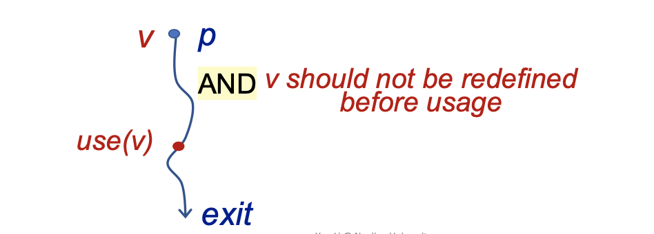
分析变量
v在一个program point-p上是否是活跃的，取决于是否存在一条从p点开始一直到程序执行结束的路径，该路径中有使用过v的地方，并且从p点到使用点期间v不可以被重新定义——则说明该变量v在p点是活跃的。分析类型
根据定义可以知道这是一个
may分析，该变量只要有使用点则分析结果就是活跃的。又因为分析的过程是从后往前的故该分析也是一个backward analysis。应用
该分析可以用来完成寄存器分配。比如在执行到程序的某一点需要将操作数加载到其中一个寄存器中——而这时候所有的
registers都满了。如何选择合适的寄存器呢？如果选择的是一个dead不活跃的寄存器值（未来不会被用到），那就可以直接替换掉。而如果这个寄存器中的变量值是活跃的，那后面再次使用到的时候就需要把它再次从内存读到寄存器，浪费了资源。细节
Data Flow Value/Fact
该分析关注的对象，就是变量本身，使用
BitVector表示。Transfer Function
IN[B] = use_B ∪ (OUT[B] - def_B)。这里的use_B指的是所有在重新定义之前变量的使用点，通过backward的思路来分析，对于一个basic block，给出其OUT来得到其IN需要关注在BB中变量是否是满足活跃的前提要求的。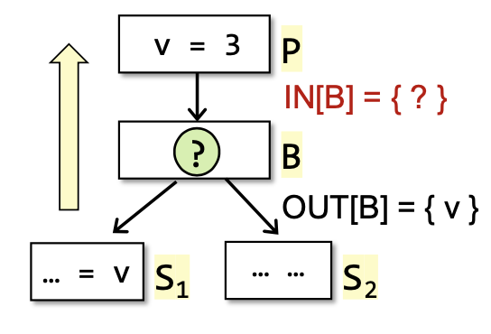
Control Flow
因为作为
may分析，其不放过任何一个运行时的行为，所以针对所有留到该IN的OUT都要接收。即IN[B] = ∪_s(s是B所有的前驱结点)OUT[s]。算法
2
3
4
5
6
7
8
9
10
11
12
13
14
> INPUT: CFG(def_B and use_B computed for each basic blocks B)
> OUTOUT: IN[B] and OUT[B] for each basic block B
> */
> IN[exit] = nullptr;
> for (each basic block B\exit)
> IN[B] = nullptr;
>
> while(changes to ant IN occur)
> for(each basic blocks B\exit) {
> OUT[B] = ∪_IN[S];
> OUT[B] = use_B ∪ (OUT[B] - def_B);
> }
>
>
将两个算法的
Transfer Func放到一起对比：
- RDA:
OUT[B] = gen_B ∪ (IN[B] - kill_B)- LVA:
IN[B] = use_B ∪ (OUT[B] - def_B)会发现很多的数据流分析算法都是
GEN/KILL Problem，统计一下公式就是OUT = gen ∪ (IN - kill)。
Available Expressions Analysis
定义
An expression x op y is available at program point p if (1) all paths from the entry to p must pass through the evaluation of x op y, and (2) after the last evaluation of x op y, there is no redefinition of x or y.
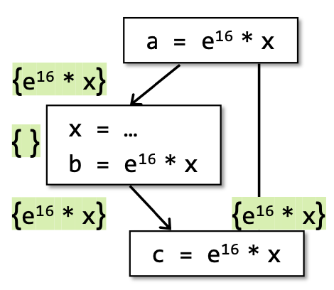
在
CFG上的所有的复合型表达式都会被拆成三地址码。判断一个expression-x op y在p点是available的，取决于从entry到p点所有的路径都必须有该表达式的evaluation求值，并且在最后一个求值之后不能对x/y重新赋值，即就说这个表达式在p点事available的。分析类型
必须保证所有的
path都有evaluation of expression分析结果才是available。因此这是一个must分析，即不能有误报但可以有漏报，比如下图中的情况，假设x = 3前后都成立那么实际上这个表达式也是可以被优化的，但是根据该must分析的定义这个分析结果是not avaliable的。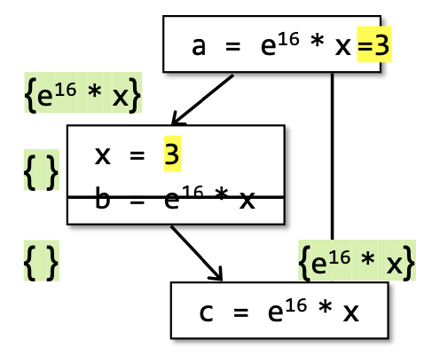
应用
该分析可以用来进行公共子表达式删除，即用
the last evaluation of available expression直接替换该表达式，从而优化代码。细节
Data Flow Value/Fact
顾名思义就是程序中所有的
expression。Transfer Function
根据定义
OUT[B] = gen_B ∪ (IN[B] - kill_B)，对于所有的输入的表达式，产生的新表达式并且删除掉在其变量被重新赋值的表达式。Control Flow
因为是
must分析对于所有的情况都要考虑，所以IN[B] = ∩(p:predecessors of B)OUT[p]。算法
2
3
4
5
6
7
8
9
10
11
12
13
14
> INPUT: CFG(kill_B and gen_B computed for each basic blocks B)
> OUTOUT: IN[B] and OUT[B] for each basic block B
> */
> out[entry] = nullptr;
> for (each basic block B\entry)
> OUT[B] = nullptr;
>
> while(changes to ant OUT occur)
> for(each basic blocks B\entry) {
> IN[B] = ∪_IN[P];
> OUT[B] = gen_B ∪ (OUT[B] - kill_B);
> }
>
>
对于这三种分析来说，如何理解
may/must，false positive/false negative和在所有CFG上程序的运行时行为之间的关系是很关键的问题。
Foundations
Mathematics Prerequisite
Partial Order
定义
poset偏序集(P, ≼)表示一个集合p，符号≼定义在该集合的partial ordering有如下性质：
- Reflexivity. ∀ x∊P, x≼x
- Antisymmetry. ∀ x,y∊P, x≼y ∧ y≼x ⟹ x=y.
Transitivity. ∀ x,y,z∊P, x≼y ∧ y≼z ⟹ x≼z.
如何理解偏序-
partial ordering？在集合p中定义了一种order，但并不是所有两个元素之间都必须满足这种order——即集合中两个元素之间可以是incomparable的。比如power set是非常典型的poset。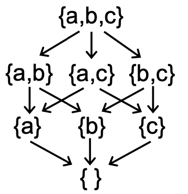
Upper and Lower Bounds
给定偏序集
(P, ≼)以及该集合的一个子集S ⊆ P。我们使用集合P中的一个元素u ∊ P来定义集合S的upper bound和lower bound:
- ∀x∊S, x≼u ⟹ u∊P is an upper bounds of S
- ∀x∊S, l≼x ⟹ l∊P is an lower bound of S
在此基础上，我们进一步定义集合
S的least upper bound(lub or join)简写为⊔S，以及greatest lower bound(glb or meet)简写为⊓S:
- for every upper bound of S, say u:
⊔S ≼ u- for every lower bound of S, say l:
l ≼ ⊓S根据
⊔S/⊓S的定义，如果集合S中只有两个元素a and b。那么：
⊔S≡a ⊔ b(a和b的并集)⊓S≡a ⊓ b（a和b的交集）不是所有的偏序集都有
⊓S/⊔S，但是如果一个偏序集同时有⊔S/⊓S的话，那该偏序集就是唯一的。Lattic
对于一个偏序集
P，如果集合中任意两个元素（构成的子集S）a和b，它们的a⊔b和a⊓b都存在，则这个偏序集就是一个lattice。
- Given poset (P, ≼), ∀a,b∊P, if ∃ a⊔b, ∃ a⊓b ∃ then P is calles a lattice
在此基础上，如果这个偏序集P中的任意两个元素只有
a⊔b或者a⊓b中的一个，则这个偏序集分别称为join semilattice和meet semilattice。Complete Lattice
对于一个偏序集
P，如果集合中任意一个子集S都存在⊔S和⊓S，则这个偏序集便称为complete lattice。全格和格的区别主要在于，格对其子集的要求是只需要有两个元素而全格对子集元素的数量没有限制。在此基础上，对于一个
complete lattice，都有存在：
- a greatest element ⊤ = ⊔P called top
- a least element ⊥ = ⊓P called bottom
每一个
finite lattice都是一个complete lattice。但是一个complete lattice却不一定是finite lattice。Product Lattice
给定多个
lattice-Li = (Pi, ≼i)的笛卡尔积构成的一个新的lattice，如果这些lattice每一个都有lub和glb的话(这里没有说明子集S的个数主要是因为它可以是只有两个元素的普通lattice也可以是包括任意元素的complete lattice，换句话说如果一个product lattice是complete lattice的笛卡尔积，那么它本身也是一个complete lattice)则称其积为product lattice并满足下面性质:
- P = P1 x P2…x Pn
- (x1, …, xn) ≼ (y1, …, yn) ≡ (x1 ≼ y1)∧…∧(xn≼yn)
- (x1, …, xn) ⊔ (y1, …, yn) ≡ (x1 ⊔ y1)∧…∧(xn ⊔ yn)
- (X1, …, xn) ⊓ (y1, …, yn) ≡ (x1 ⊓ y1)∧…∧(xn ⊓ yn)
即一个
product lattice中的每一个元素lattice满足的性质它都满足。
Data Flow Analysis Framework via Lattice
Iterative Algorithm
回顾前面三个具体的数据流分析算法，即相应的
may/must分析从各自的初始状态出发，经过不断迭代（Transfer Function/Control Flow）最终到达不动点——整个程序的数据流不会发生变化，算法停止。这里从更具体的角度来理解这个算法：
给定一个
CFG，其中有k个节点(这里简化成为只带一个statement的basic block)。而迭代算法在每次迭代中更新这k个节点的输出OUT，引入一个k-tuple:
- (OUT[n1], OUT[n2], …, OUT[nk]) ≡ (V1 x V2 … x Vk)
k-tuple就是每一次迭代后所有节点输出值的product记为Vk。而更具体的解释就是不同的数据流分析算法在每次迭代中通过应用各种Transfer Function/Control Flow来更新k-tuple的值——可以将每一次迭代抽象出成为一个函数:F: Vk ⟶ Vk。而当最后一次迭代的输出没有发生变化便到达了不动点。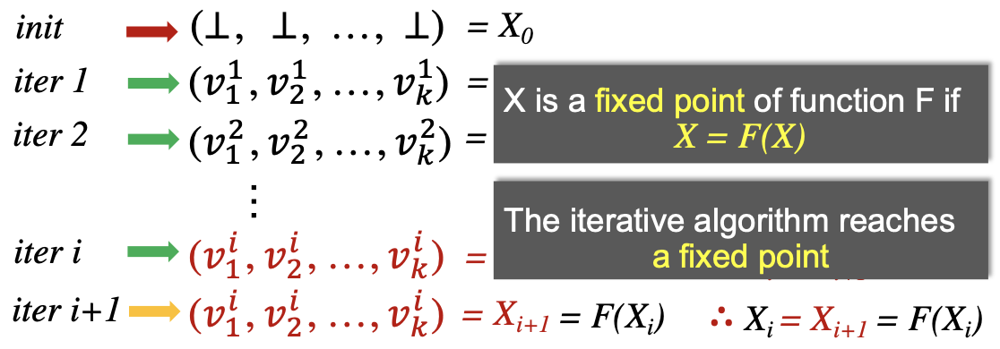
This general iterative algorithm produces a solution to data flow analysis，根据函数F的一个不动点的定义：
- X is a fix point of Function F if X = F(X)>
可以得到当把每一个迭代抽象成为一个函数的时候，
Iterative Algorithm最终会到达一个不动点，而这个不动点就是数据流分析的一个结果。Data Flow Analysis Framework via Lattice
定义一个数据流分析框架主要有三个部分(D, L, F):
- D: 指的是分析的方向是
backwwards/forwards- L: 核心部分是
lattice，代表所分析的数据流值域，和一个meet⊓或者join⊔运算符（一般一个数据流分析算法只会用到其中一个运算符——故其实是semilattice）- F: 指的是分析中的
Transfer Functions分析框架就可以看成是在一个
lattice的值上不停的迭代transfer functions和join/meet operations。Fixed Point Theorem
在学完
Iterative Algorithm以及Data FLow Analysis Framework之后，我们需要进一步理解这两者之间的关系，并更深层次的理解在lattice上定义的函数的不动点原理-Fixed Point Theorem，首先对Iterative Algorithm提出一些核心的问题:
- 迭代算法能保证一定会到达不定点么？
- 假设可以到达不动点，那这个不动点是唯一的么，或者通过迭代算法到达的不动点是最精确的么？
- 假设可以到达不动点，那什么时候可以到达？
前两个问题引出了不动点理论及其存在性以及精确性。由于前面介绍的
Iterative Algorithm也是建立在Lattice之上的，所以为了回答这三个Iterative Algorithm有关的问题，首先应该引入建立在Lattice上的函数并研究该函数不动点的性质，最后将这个函数与Iterative Algorithm联系起来。Monotonicity
引入在
Lattice定义上的函数f并定义其单调性:
f: L ⟶ L (L is a Lattice)is monotonic if ∀x,y∊L, x≼ y ⟹ f(x) ≼ f(y)在此基础上引入
对于一个`complete lattice(L, ≼)`，如果①在其上的函数`f:L⟶L`是单调的，②L是`finite lattice`： 那么通过迭代f(⊥), f(f(⊥)), ..., f^k(⊥)可以得到`least fixed point`； 通过迭代f(⊤), f(f(⊤)), ..., f^k(⊤)可以得到`greatest fixed point`。Fixed-Point Theorem:可以通过证明该理论来回答前两个问题。证明分为两步:
- 不动点的存在
- 迭代到达最小/大不动点
Proof
Proof-Existence of Fixed Point:
∵
⊥是Lattice最小元素，由f:L⟶L的定义可知f(⊥)也是Lattice上的元素⟹ ⊥ ≼ f(⊥) ∵
f是单调的 ⟹ f(⊥) ≼ f(f(⊥))=f2(⊥) 相似的 ⟹ ⊥≼ f(⊥) ≼ f2(⊥) … ≼ fi(⊥) ∵
L是finite的 ⟹ fk(⊥) = f(k+1)(⊥) ∴ 不动点存在
Proof-Least Fixed Point:
假设有另一个不动点
x，⟹x = f(x),⊥ ≼ x
Induction: ∵ f 是单调的 ⟹ f(⊥) ≼ f(x)
假设f^i(⊥) ≼ fi(x), ∵ f单调 ⟹ f(i+1)(⊥) ≼ f(i+1)(x)
∴根据归纳法 ⟹ fi(⊥) ⟹ fi(x)
∵
x是不动点，fi(⊥) ≼ fi(x) = x， 又∵ffix=fk(⊥)是从⊥开始迭代停止的不动点 ⟹ fk(⊥) ≼ x ∴fk(⊥)是唯一的最小不动点(最大不动点证明类似)
Iterative and Fixed-Point
理解数据流分析的最后一步，就是将分析的
Iterative Algorithm与前面建立在Lattice上Fixed-Point Theorem联系起来，而关于不动点原理的前提:
- a complete lattice(L, ≼)， L is finite
f: L ⟶ Lis monotonic可以看出只需要将迭代算法抽象成一个个定义在
Lattice上的单调函数即可(根据不动点原理该函数一定会达到最大/小不动点)——下面具体对Iterative Algorithm进行抽象:迭代算法中的
CFG每一个节点的输出Vi都可以抽象成一个Lattice，故全部CFG的输出Vk就是一个product lattice。又因为节点是有限的，故这个product lattice是complete lattice。又因为迭代算法的核心就是Vk应用
Transfer Function和meet/join Function完成一次又一次的迭代，这里的Transfer /meet.join Function可以抽象成定义在Lattice上的函数。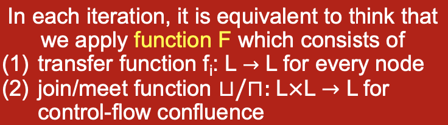
只要保证
Transfer Function和meet/join Function是单调的，就可以完成迭代算法到不动点理论的映射。其实所有的
Transfer Function本质上都是gen/kill problems，因此简化为函数fi: L ⟶ L。其基本公式可以简化成为OUT[S] = genS ⋃ (IN[S] - killS) 。从基本公式中可得:
- genS和killS是根据数据流分析算法的定义决定的，所以保持不变
- genS是单调的(OUT[S]只会增加)，IN[S]要么被kill掉，要么也加入到OUT[S]中
- 因此
OUT[S] never shrinks由于输入一定是有限的(输入就是数据流比如
all definitions/all variables/all expressions)因此该函数一定也是单调有界的。相对来说
meet/join Function函数⊔/⊓:L x L ⟶ L，只证明⊔是单调的，⊓类似:Poof.
∀x, y, z ∊ L, x ≼ y, 我们要证明 x⊔z ≼ y⊔z
∵ x≼y, y ≼ y⊔z ⟹ x ≼ y⊔z
∵ x⊔z是least upper bound of x and z
∴x⊔z ≼ y⊔z
得证该函数也是单调的。
到此为止，我们完美的将
data-flow analysis的iterative algorithm转化成为fixed-point theorem的已知条件，故fixed-point theorem的结论当然也适用于iterative algorithm。我们也回答了这一节最开始关于迭代算法不动点存在性和精度的问题。Complexity
关于迭代算法的不动点理论还有最后一个问题，就是算法会在什么时候到达不动点即
when can we get the solution?这就涉及到了在Lattice建立的函数的复杂度：首先引入
Lattice的高度height，即从lattice的top到bottom最长的一条路径h，假设该CFG中节点的数目是k，那最坏情况需要i = h* k次迭代才能到达不动点。到此为止，所有的理论部分都介绍结束了！
May/Must Analysis On Lattice
前面一部分主要从数学角度引入在
lattice上定义的函数的不动点定理，然后证明了数据流分析的算法本质上就是通过迭代来达到不动点。但是实际上不同的数据流分析算法有不同的应用场景，各自对精度和Soundness的要求也不相同——因此如何理解may和must分析的初始化条件以及最大/小不动点？ 本节解决 ①may/must data-flow analysis如果用lattice表述会是什么样子?②这些分析和求解lattice上的不动点有什么关系？即may求解最小不动点而must求解最大不动点？③求解不动点和分析的Soundness和分析精度有什么关系？这部分讲解十分精彩，图见课件，这里只是记录我认为最核心的需要理解的部分。may analysis
may分析从⊥到⊤。拿
Reaching Definition应用于检测未定义变量为例：bottom
分析的
⊥是no definitions can reach，⊥就意味着所有变量都不是未定义，这个分析结果一定是unsafe的（因为实际上哪怕只有一个未定义变量没有被检测出来，运行时也一定会报错）。top
分析的
⊤是all definitions may reach，就意味着所有的变量都是未定义，故分析结果一定是safe的（因为就算有一个定义过的变量被检测成未定义，运行时也不会报错）。safe & precision
分析算法继续迭代，沿着更加
safe的方向走，直到到达最小不动点——这部分是已经证明过的了，问题是如何理解分析的精度和安全。回顾
may分析结果可以有误报但不可以有漏报即false-positive或者sound。我理解是这里的safe和precision都是针对运行时来说的，⊥一定会在运行时报错，⊤程序不会运行，而如何保证safe是由设计者自己设计的Transfer Function决定的。另一方面精度问题针对在safe的前提下是否可以尽量少误报，因为不动点有很多而最终我们需要的只是最小的那个。must analysis
must分析从⊤到⊥。拿
available expression应用于优化公共子表达式删除为例：top
分析的⊤是all expressions must be available，就意味着所有的表达式都是可以被优化的，这个分析结果一定是
unsafe的（因为哪怕有一个表达式不是公共的，那优化结果一定是错的）。bottom
分析的⊥是no expressions are available的，就意味着所有的表达式都不可被优化，故分析结果一定是
safe的（因为哪怕有一个公共表达式为被检测出来，那也仅仅只是少几个优化）。safe & precision
回顾
由此可以看出`may/must`分析完全针对的是不同的场景，但是其分析结果的`safe`和`precision`却都是针对程序运行时和最终的结果。must分析结果可以有漏报但是不可以有误报即false-negative或者complete。我理解是这里的safe和precision也是针对程序运行结果而言的，⊥少几个优化，⊤的程序一定出现问题。如何保证safe是由设计者自己设计的Transfer Function决定的。另一方面精度问题针对在safe的前提下是否可以尽量少漏报，因为不动点有很多而最终我们需要的只是最大的那个。another view
老师在这里提供了另一个角度，就是在
lattice上迭代函数，其中Transfer Function本身是固定的，而两种分析的join/meet Function根据lattice的性质其就是两个元素的least/greatest upper/lower bound，加上分别从⊥和⊤开始，故每次迭代函数走的都是最小/大的路径，故到达的也是最小/最大不动点。
MOP and Distributivity
前面讨论了数据流分析
Iterative Algorithm最后到达的不动点是最精确的。但是如何衡量这个精度？这一小节引入一个很经典的概念Meet-Over-All-Paths Solution即MOP。
MOP概念引入CFG的每一条路径都是从entry一直到其执行结束。
- P = Entry ⟶ S1 ⟶ S2 ⟶… ⟶ Si
MOP每一条path的Transfer Function是该条路径上所有statements的Transfer Function的合力，最后应用meet operator来计算数据流值: MOP[Si] = ⊔/⊓ FP(OUT[Entry])。MOP仅仅作为一个理论上的概念存在是因为应用中很多路径是not executable的，Unbounded的以及not enumerable的，故对于那种指数爆炸的程序MOP是impractical的。这里主要通过MOP概念对比Iterative Algorithm。对于同一个CFG: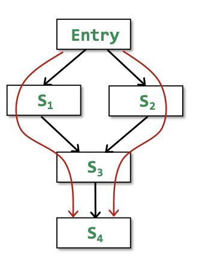
迭代算法是在每一个
control flow应用函数:IN[S4] = fS3</sub>(fS1</sub>(OUT[Entry]) ⊔ fS2</sub>(OUT[Entry]))而
MOP只会在路径结束之后应用函数:MOP[S4] = fS3</sub>(fS1</sub>(OUT[Entry])) ⊔ fS3</sub>(fS2</sub>(OUT[Entry]))简化一下就是:
- Ours = F(x ⊔ y)
- MOP = F(x) ⊔ F(y)
可以证明迭代算法的精度要比
MOP更不准。只有当F函数是distributive的时候才能保证F(x⊔y) = F(x) ⊔ F(y)即两种算法的精确度是一样的。前面的所有Bit-vector/Gen/Kill问题的数据流分析算法它们的meet/join函数都是distributive的。
Constant Propagation
常量传播是一个
non-distributive的数据流分析算法。Given a variable x at program point p, determine whether x is guaranteed to hold a constant value at p.
按照数据流分析框架(D, L, F)来解释的话，该分析一定是前向分析
forward-analysis，由于作为优化算法其必须保证运行时不可以出错故是must分析。其lattice的domain是一个pair(x, v)其中x是变量而v表示变量的值（有constant,undefined，notAconstant三种选项），分析的meet operator和之前的算法不同——不是单一的⊔/⊓：
- NAC ⊓ v = NAC
- UNDEF ⊓ v = v
- c ⊓ v = ?
- c ⊓ c = c
- c1 ⊓ c2 = NAC
给定
s: x = ...是一个赋值语句，因此该语句OUT则是IN的所有变量减掉x(因为x被重新赋值了)再加上该语句中新gen出来的变量。故定义常量传播的Transfer FunctionF: OUT[s] = gen ⋃ (IN[s] - {(x, _)})。其中gen函数:
- s: x = c; //c is a constant ⟹ gen = {(x, c)}
- s: x = y; ⟹ gen = {(x, val(y))}
- x: x = y op z; ⟹ gen = {(x, f(y, z))}
- val(y) op val(z) // if val(y) and val(z) are constants
- NAC // if val(y) or val(z) is NAC
- UNDEF //UNDEF op UNDEF or UNDEF op NAC
下面的这个例子中：
用数据流分析迭代算法以及
MOP算法来完成常量传播求值之后进行一次对比:
- Ours: F(X ⊓ Y) = {(a, NAC), (c, NAC), (c, NAC)}
- MOP: F(X) ⊓ F(Y) = {(a, NAC), (b, NAC), (c, 10)}
按照
must分析的不动点理论，分析是从⊤到⊥（⊤就是UNDEF，⊥是NAC）进行的。而Ours的值要比MOP的值更靠近⊥故其分析则less precise。因此F(X⊓Y)≠ F(X)⊓ F(Y)进而F(X⊓Y) ⋞ F(X)⊓ F(Y)。所以该分析是Nondistributive的。

Worklist Algorithm
在实际的数据流分析中会使用迭代算法的优化版本即
Worklist Algorithm。迭代算法的主要复杂度在
CFG中一个节点输出有变化都需要使得整个CFG迭代，而Worklist Algorithm则是迭代算法的一种剪枝优化。
2
3
4
5
6
7
8
9
10
11
12
>for(each basic block\entry)
> OUT[B] = nullptr;
>Worklist ⟵ all basic blocks
>while(Worklist is not empty)
> Pick a basic block B from Worklist
> old_OUT = OUT[B]
> IN[B] = ⊔OUT[P]
> OUT[B] = gen_B ⋃ (IN[B] - kill_B)
> if(old_OUT ≠ OUT[B])
> add all successors of B to Worklist
>
>
至此，数据流分析的学习告一段落。